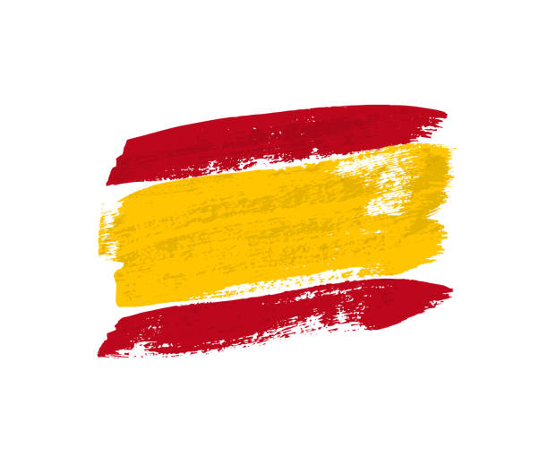

Descargo
Sitio web
Esta web forma parte de un proyecto educativo realizado en el marco del proyecto Erasmus: "Promotion in motion". Este sitio web fue realizado con el permiso del Patronato de Turismo de Torremolinos. Por favor, en caso de contacto vaya al sitio web oficial de la empresa: Patronato de Turismo de Torremolinos
Projecto 'Promotion in Motion'
Este proyecto educativo fue financiado por la Unión Europea. Sin embargo, los puntos de vista y opiniones expresados son únicamente los de los autores y no reflejan necesariamente los de la Unión Europea o la Agencia Ejecutiva Europea en Educación y Cultura (EACEA). Ni la Unión Europea ni la EACEA pueden ser consideradas responsables de ello.
Entre los objetivos del proyecto, que será desarrollado a lo largo de 2 años por estudiantes de Formación Profesional (FP) y de secundaria, están hacer que los estudiantes creen presentaciones en Prezzi sobre empresas para mejorar su competencia en marketing y ayudar a crear vínculos de colaboración entre empresas y las escuelas, así como diseñar postales con Canva para promover diferentes negocios e iniciativas.
Disclaimer
Website
This web is part of a educative proyect made as a part of the Erasmus project: "Promotion in motion" . This website was developed with the permision of the Tourism Board or Torremolinos. Should you need to contact the organization, please refer to their official website: Patronato de Turismo de Torremolinos
'Promotion in Motion' Project
This educative proyect was Funded by the European Union. Views and opinions expressed are however those of the author(s) only and do not necessarily reflect those of the European Union or the European Education and Culture Executive Agency (EACEA). Neither the European Union nor EACEA can be held responsible for them.
Among the objetives of the project, which will be developed throughout 2 years by Vocational Education Training (VET) and secondary students, are to make students create presentations in Prezzi about companies to improve their marketing competence and to help and create links of collaboration bewteen enterprises and the schools, as well as to design postcards developed with Canva to promote different business and initiatives.